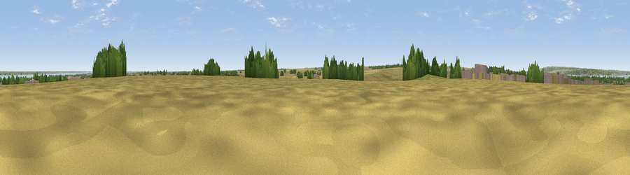

Viewpoint near Barton-upon-Humber
#30068 in England · top 52% of its area beats it · near Barton-upon-Humber · access?Where it is
The exact computed spot (TA 04337 21100). Click the marker for map links.
Public access: no public right of way or access land is recorded at this exact spot — it may be on private land. Computed from Natural England's CRoW access layer and OpenStreetMap rights of way — not the legal definitive map. Always verify locally.
The view, rendered

A 360° render of this exact spot computed from the terrain model, tree cover and land cover — summer colours, afternoon light, calibrated against photographs of famous viewpoints. Real trees, hedges and buildings will differ in detail.
The panorama
Grey silhouette: terrain skyline in each direction (720 bearings, Earth curvature and refraction included). Dashed green: skyline with trees (+15 m) and buildings (+8 m) as obstacles. Blue strip: how far the ground is visible on each bearing.
Where the view opens
Wedge length = distance to the farthest visible ground on that bearing (vegetation-aware). Rings at 10, 25 and 50 km.
What fills the view
60% cropland · 12% water · 11% grassland · 9% woodland · 8% built-up ·
Angular shares of the visible panorama (visual magnitude), not map area. Landscape diversity 0.54 (0–1 Shannon).
Key numbers
More beautiful places nearby
The staircase of upgrades: each row has a higher view potential than everything closer. Driving times are estimates from straight-line distance, calibrated against real road routing — check an actual route before setting out.
| Place | Direction | Drive | Score |
|---|---|---|---|
| Viewpoint near South Ferriby | W · 5 km | ~11 min | 57.4 |
| Viewpoint near Willerby | NNW · 10 km | ~20 min | 57.9 |
| Viewpoint near South Cave | NW · 16 km | ~28 min | 60.9 |
| Viewpoint near South Newbald | NW · 17 km | ~30 min | 62.3 |
| Viewpoint near South Newbald | NW · 17 km | ~30 min | 64.9 |
| Viewpoint near Claxby | SSE · 25 km | ~41 min | 70.5 |
| Viewpoint near Claxby | SSE · 27 km | ~43 min | 71.5 |
| Garrowby Hill (A166 crest) | NNW · 43 km | ~63 min | 71.9 |
53.67596, -0.42198 · source: osm peak · position refined by local search. Computed location — check access rights before visiting.